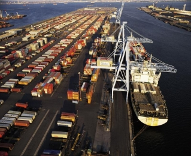

The logistics and transportation industry in the United States is highly competitive. By investing in this sector, multinational firms position themselves to better facilitate the flow of goods throughout the world’s largest consumer market. International and domestic companies in this industry benefit from a highly skilled workforce and relatively low costs and regulatory burdens.

Spending in the U.S. logistics and transportation industry totaled $1.33 trillion in 2012, and represented 8.5 percent of annual gross domestic product (GDP). Analysts expect industry investment to correlate with growth in the U.S. economy.
A highly integrated supply chain network in the United States links producers and consumers through multiple transportation modes, including air and express delivery services, freight rail, maritime transport, and truck transport. To serve customers efficiently, multinational and domestic firms provide tailored logistics and transportation solutions that ensure coordinated goods movement from origin to end user through each supply chain network segment.
Logistics services: This subsector includes inbound and outbound transportation management, fleet management, warehousing, materials handling, order fulfillment, logistics network design, inventory management, supply and demand planning, third-party logistics management, and other support services. Logistics services are involved at all levels in the planning and execution of the movement of goods.
Air and express delivery services (EDS): Firms offer expedited, time-sensitive, and end-to-end services for documents, small parcels, and high-value items. EDS firms also provide the export infrastructure for many exporters, particularly small and medium-sized businesses that cannot afford to operate their own supply chain.
Freight rail: High volumes of heavy cargo and products are transported long distances via the U.S. rail tracking network. Freight rail moves more than 70 percent of the nation’s coal, 58 percent of its raw metal ores, and more than 30 percent of its grain. This subsector accounted for approximately one third of all U.S. exports.
Maritime: This subsector includes carriers, seaports, terminals, and labor involved in the movement of cargo and passengers by water. Water transportation carries about 78 percent of U.S. exports by tonnage, via both foreign-flag and U.S.-flag carriers.
Trucking: Over-the-road transportation of cargo is provided by motor vehicles over short and medium distances. The American Trucking Associations reports that in 2012, trucks moved 9.4 billion tons of freight, or about 68.5 percent of all freight tonnage transported domestically. Motor carriers collected $642 billion in revenues, or about 81 percent of total revenue earned by all domestic transport modes.